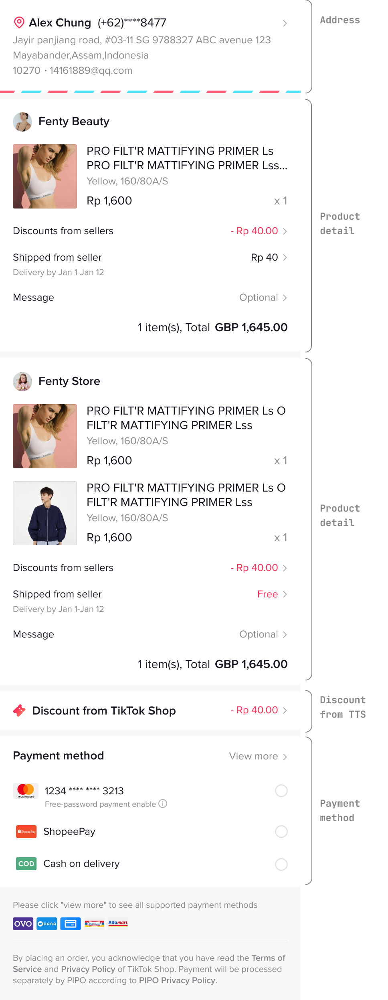
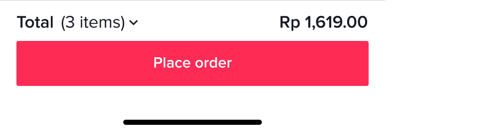
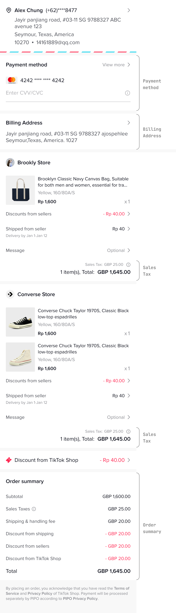
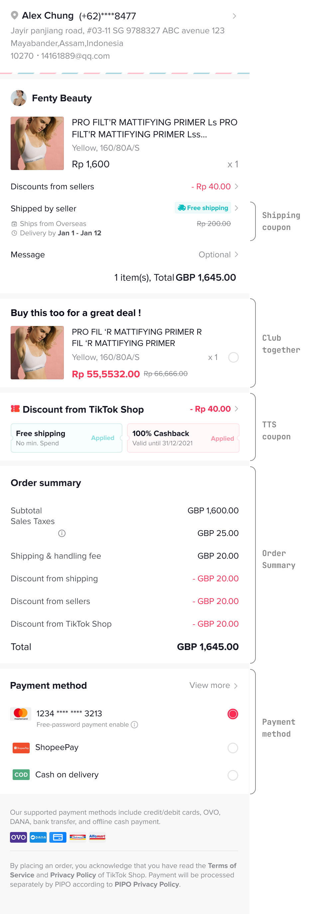
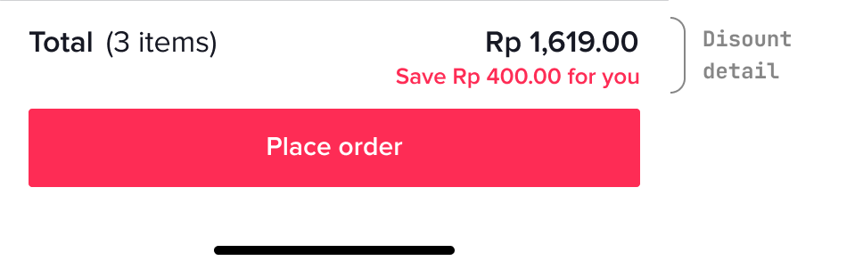
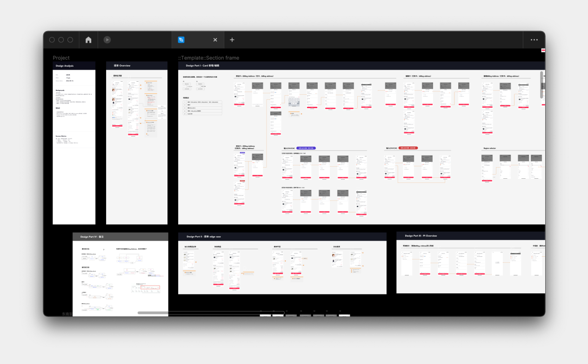

ByteDance TikTok Shop / 字節跳動 抖音電商
UX & UI
*本文符合公司保密條款，設計過程經過修減，僅露出已上線資訊與公開資料。
*This article complies with the company's confidentiality terms, so the design process has been revised. Only the online information and public information are exposed.
*This article complies with the company's confidentiality terms, so the design process has been revised. Only the online information and public information are exposed.
In ByteDance, I mainly support the bill of lading payment link of Douyin e-commerce. In order to realize the market closed-loop business in various regions, the designer needs to transform the bill of lading page and graft it with the bank according to the user habits in different regions.
Due to the large number of product requirements, this article will mainly focus on the design of the bill of lading page in the United States and Southeast Asia.
Due to the large number of product requirements, this article will mainly focus on the design of the bill of lading page in the United States and Southeast Asia.
我在字節跳動主要是支援抖音電商的提單支付環節。為實現各地區的市場閉環業務，設計師需針對不同地區的用戶習慣，對提單頁面進行改造與銀行嫁接。
由於需求交付眾多，本篇將主要講述美國與東南亞的提單頁設計。
由於需求交付眾多，本篇將主要講述美國與東南亞的提單頁設計。
Role
Designer
Collaborators
ByteDance
Duration
2022 / 6
Link
Behance >
What’s the impact of different culture
The order summary page plays a crucial role as the last step of the user's e-commerce consumption. Therefore, it is necessary to analyze the user's ordering habits through qualitative and quantitative methods. If the design of the order summary page cannot meet the user's habits, it may reduce the user's trust in the TikTok Shop platform, resulting in a sharp drop in the conversion rate of orders.
提單支付頁做為用戶在電商消費的最後一步，扮演至關重要的角色，因此需透過定性與定量方法分析用戶的下單習慣。若提單頁的設計無法滿足用戶習慣，將有可能降低用戶對抖音電商平台的信任感，導致下單轉化率大幅下跌。
在優化前，提單頁在各個服務地區都是使用下列同個版本。
提單支付頁做為用戶在電商消費的最後一步，扮演至關重要的角色，因此需透過定性與定量方法分析用戶的下單習慣。若提單頁的設計無法滿足用戶習慣，將有可能降低用戶對抖音電商平台的信任感，導致下單轉化率大幅下跌。
在優化前，提單頁在各個服務地區都是使用下列同個版本。


What I did
According to the user characteristics of the two major regions of Southeast Asia and the United States, the following two versions are designed.
In Southeast Asia, increase the perception of discounts and unify the display form of discount information on the bill of lading page.
In the United States, I add the billing address module to improve the level of order details.
根據東南亞與美國兩大區域的用戶特性，設計下列兩種版本。
在東南亞，增加優惠感知，統一優惠信息在提單頁的展示形式。
在美國，加入帳單地址模塊，提高下單明細的層級。
在東南亞，增加優惠感知，統一優惠信息在提單頁的展示形式。
在美國，加入帳單地址模塊，提高下單明細的層級。
Difference between two types
👇 American version

👇 Southeast Asia version



Amarican version
Added billing address page and decoupled from card information. At the same time, it reduces the transmission of discounts, pays attention to the price details, and satisfies the mentality of "doing research" of American users.
新增帳單地址頁，並且與卡片信息解耦開。同時降低優惠傳遞，注重價錢明細露出，滿足美國用戶“做研究”的心態。
Southeast Asia version
Design the coupon bar floating at the top. After clicking, the user can quickly locate and pull up the coupon panel to display the discount amount and improve the user's perception of price changes.
設計浮動在頂部的 coupon bar ，用戶點擊後可快速定位並拉起優惠券面板，顯示優惠金額，提高用戶對價錢變動的感知程度。
Insight
Difficulty
👉🏻 Insufficient internal consensus: When the product side defines the requirements, it is not clear about the potential risks and reach an internal consensus, which causes the design to be repeatedly revised back and forth and cannot enter the development.
👉🏻 The database structure does not conform to user habits: the original design scheme cannot be implemented because the billing address was not decoupled when the card information database was created.
👉🏻 The database structure does not conform to user habits: the original design scheme cannot be implemented because the billing address was not decoupled when the card information database was created.
👉🏻 內部共識不足：產品端在定義需求時，還不明確潛在的風險與達成內部共識，造成設計來回反覆修改，無法進入開發。
👉🏻 資料庫結構不符合用戶習慣：由於當初建制卡片信息資料庫時未把帳單地址解耦，導致原設計方案無法實行。
👉🏻 資料庫結構不符合用戶習慣：由於當初建制卡片信息資料庫時未把帳單地址解耦，導致原設計方案無法實行。
Solution
👉🏻 Small co-creation meeting: Pull relevant engineers and product managers to conduct a small and fast co-creation workshop (about 1 hour). Finally, the consensus of all stakeholders is reached before entering the product review.
👉🏻 Visualization of database changes: After discussion and confirmation, the changes to the database will be visualized and attached as a design reference.
👉🏻 Set up an intermediary plan: Since it takes a long time to modify the background, the modification of the interaction process, although it cannot fully conform to the original user habits, is not easy to detect when it does not enter the boundary case.
👉🏻 Visualization of database changes: After discussion and confirmation, the changes to the database will be visualized and attached as a design reference.
👉🏻 Set up an intermediary plan: Since it takes a long time to modify the background, the modification of the interaction process, although it cannot fully conform to the original user habits, is not easy to detect when it does not enter the boundary case.
👉🏻 小型共創會議：拉動相關的工程師與產品經理進行小型且快速的共創工作坊（約1小時），為加速收斂意見，採用 投票>快速實現>投票 的機制，最終在進入產品評審前即達成所有利害關係人的共識。
👉🏻 視覺化表現資料庫改動：經討論確定後，將資料庫改動視覺化呈現，附為設計參考依據。
👉🏻 訂定中介方案：由於修改後臺耗時良久，因此修改交互流程，雖無法完全貼合原本的用戶習慣，但在未進入邊界案例時不易察覺。
👉🏻 視覺化表現資料庫改動：經討論確定後，將資料庫改動視覺化呈現，附為設計參考依據。
👉🏻 訂定中介方案：由於修改後臺耗時良久，因此修改交互流程，雖無法完全貼合原本的用戶習慣，但在未進入邊界案例時不易察覺。

☝🏻 Visualization of database changes for designer

☝🏻 prototype